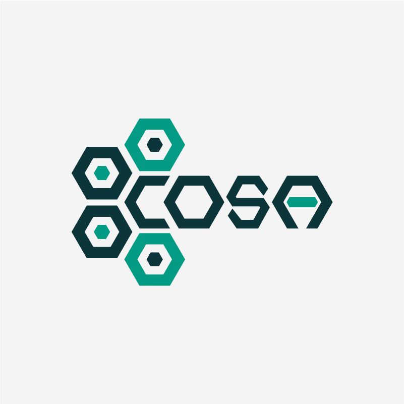
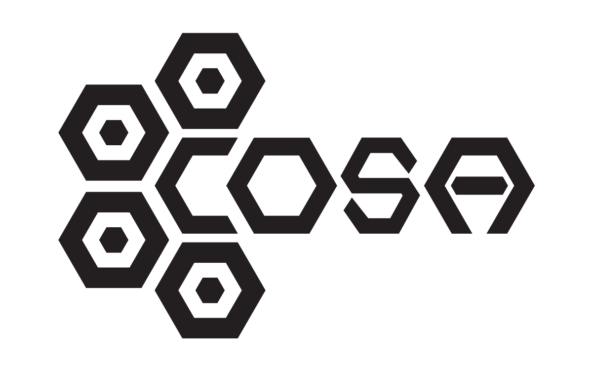
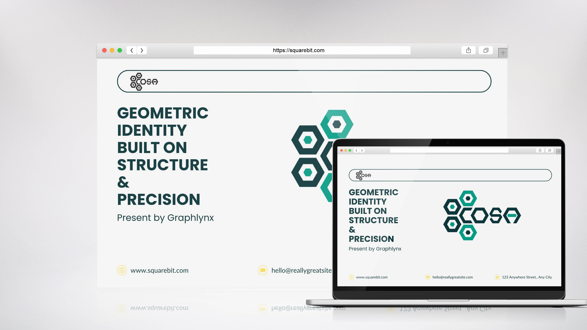
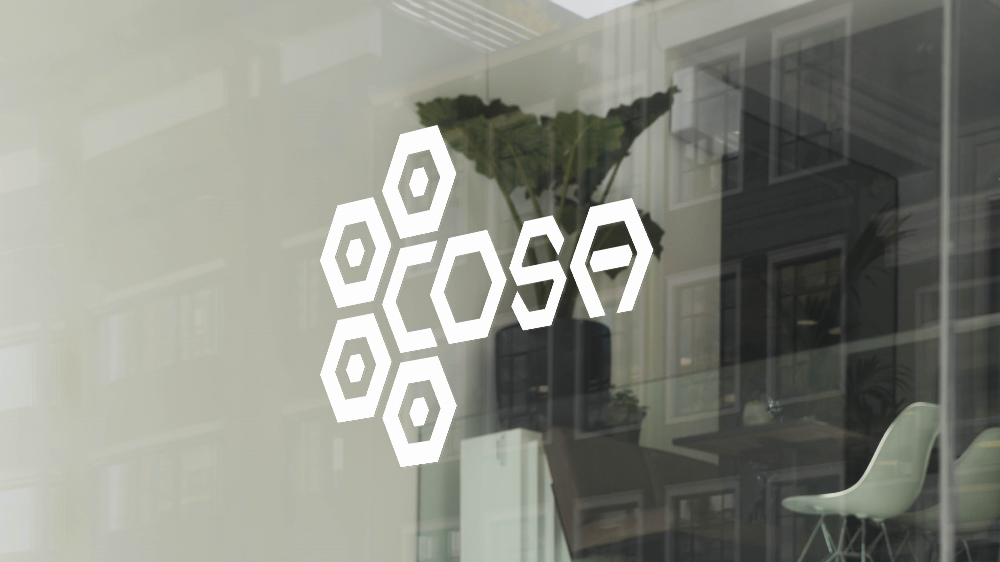
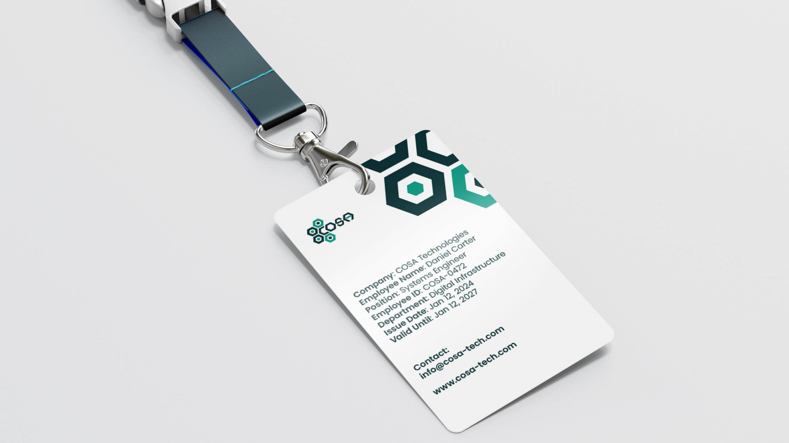

COSA
Geometric Identity Built on Structure & Precision
Details
- Client
- COSA (Concept)
- Industry
- Technology / Digital Systems
- Year
- 2024
Scope
- Services
-
- Brand Identity
- Logo Concept
- Visual System
- Key Values
-
- Structure
- Modularity
- Precision
The Brief
COSA was explored as a conceptual technology brand centered around structure, modular thinking, and system-based design. The objective was to create a geometric identity that feels intelligent, scalable, and digitally native without relying on trends or decorative complexity.
Concept & Thinking
The identity is built around a modular hexagonal structure—an abstract system inspired by interconnected nodes and engineered frameworks. The form suggests collaboration, stability, and digital architecture while maintaining strong visual simplicity.
- Modular Hexagonal System: Representing connectivity and structured growth.
- Abstract Digital Reference: Without literal tech clichés.
- Minimal Construction: For memorability and clarity.
- Balanced Geometry: Cohesion between symbol and custom-styled lettering.
Logo Symbolism
The hexagonal cluster represents interconnected units forming a unified system. This modular approach reflects digital infrastructure, collaboration, and structural reliability. The repeated geometric shape reinforces consistency and scalability—core attributes of modern technology brands.
Color Direction
A deep teal background establishes stability and depth, while the brighter green accent introduces energy and innovation. The palette feels technical but not cold. Controlled, not chaotic.
Deep Teal
#0C3539
System Green
#039B84
Pure White
#FFFFFF
Logo Variations

Real-World Applications

Interface
Dashboard branding

Environment
Data center signage
Mobile App
System control icon

Employee ID
Security access card
Final Outcome
The final identity delivers a structured, modern presence rooted in geometric precision. Designed for digital-first applications, the mark remains adaptable across interfaces, branding systems, and scalable environments while maintaining strong visual recognition.